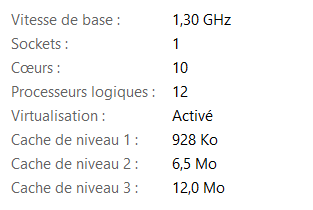

Concepts fondamentaux
Le processeur (ou CPU, pour Central Processing Unit) est la partie qui exécute les instructions des programmes et effectue les calculs nécessaires au bon fonctionnement de l’ordinateur. Il peut être vu comme “l’organe” qui contrôle l’exécution des tâches. Un processeur peut contenir un ou plusieurs cœurs (ou cores), chacun capable de traiter des instructions indépendamment.
Coeurs du Processeur
Définition :
Un cœur (ou core) est une unité de calcul indépendante au sein d’un même processeur. Chaque cœur dispose de son propre jeu de registres, d’une unité arithmétique/logique et d’un cache. Plus un processeur compte de cœurs, plus il peut traiter de tâches vraiment en parallèle.
Exemple :
Un processeur quad-core possède 4 coeurs physiques, chacun pouvant exécuter des instructions indépendamment des autres.Par ailleurs, il ne faut pas se fier aux noms marketing: un Intel Core i5 n’a pas nécessairement 5 coeurs ! Par exemple, un i5-10400 possède 6 coeurs physiques. Les nombres dans les noms (i3, i5, i7) reflètent une gamme de performance, pas le nombre de coeurs.
Pour connaître le nombre de coeurs disponibles sur votre machine, vous pouvez utiliser la fonction
detectCores()du package parallel, avec l’option FALSE sur logical.
# Ce package n'a pas besoin d'être téléchargé au préalable,
# il est directement disponible lorsque R est installé
library(parallel)
# Nombre de coeurs physiques
nb_coeurs_physiques <- detectCores(logical = FALSE)
print(nb_coeurs_physiques)## [1] 10Dans mon cas par exemple, mon core i5 a 10 coeurs.
Threads (ou Processeurs Logiques)
- Définition :
Un thread est la plus petite unité d’exécution gérée par le système d’exploitation, c’est une séquence d’instructions qu’un cœur peut traiter.
Chaque thread possède son propre contexte (ensemble des informations que le CPU doit sauvegarder et restaurer pour reprendre l’exécution exactement là où il s’était arrêté), mais partage avec les autres threads du même cœur les ressources matérielles (unités arithmétiques, caches).
- Pour connaître le nombre de threads disponibles sur votre machine, vous pouvez utiliser la même fonction
detectCores()du package parallel, avec l’option TRUE sur logical.
## [1] 12Ces deux informations peuvent aussi etre visualisées au niveau du gestionnaire de tâches, sous l’onglet performance.
`
Hyper-threading
C’est une technologie qui permet à un seul cœur physique de se présenter au système d’exploitation comme deux (et quelque fois plus de 2) cœurs logiques (threads) simultanés.
- Exemple :
Un processeur quad-core sans hyper-threading gère 4 threads mais lorsqu’il est doté d’hyper-threading, il peut gérer 8 threads. De manière generale le système d’exploitation considere donc que l’ordinateur a 8 coeurs puisqu’il peut théoriquement exécuter 8 tâches en même temps, mais en réalité, c’est rien que 4 coeurs physiques qui existent réellement.
Lien entre Coeurs, Threads et calcul parallele
Physiquement :
Vous disposez d’un nombre fixe de coeurs physiques (par exemple, 4 coeurs sur un processeur quad-core).Logiquement :
Chaque coeur peut être “dédoublé” en plusieurs threads grâce à l’hyper-threading. Ainsi, même avec 4 coeurs, vous pouvez avoir plus d’unités d’exécution simultanée (par exemple, 8 threads).En pratique pour le calcul parallèle :
On parle souvent de “coeurs” pour simplifier, mais ce sont en réalité les threads (unités logiques) qui exécutent les tâches. Le nombre de threads disponibles détermine combien de tâches peuvent être réellement exécutées en parallèle.
Par exemple, dans mon cas, mon ordinateur a 10 coeurs et 12 threads et donc il y a 2 coeurs qui grace au hyper-threading gerent 2 threads chacun et les 8 autres coeurs gerent 1 thread chacun. Donc pour le calcul parallele, 12 threads sont disponibles pour optimiser cette méthode.
Programme Maître et son rôle dans le calcul parallèle
Le programme maître est essentiel pour coordonner le calcul parallèle en distribuant les tâches et en recueillant les résultats. Il est chargé de trois responsabilités principales :
Initialisation des workers
Création des workers et chargement des packages nécessaires.
Coût d’initialisation : cette étape peut prendre plusieurs secondes, car chaque worker doit démarrer et recevoir les outils nécessaires.
Amortissement de l’overhead : pour que le parallélisme soit rentable, chaque worker doit avoir suffisamment de travail pour compenser ce temps de démarrage, dans le cas contraire, le calcul séquentiel peut etre preferable.
Exemple: Si le démarrage d’un worker prend 100 ms et que sa tâche dure 10 ms, le coût d’overhead est prohibitif. ( L’overhead ou surcharge regroupe toutes les opérations hors calcul qui consomment du temps:
- Création et destruction des workers
- Exportation des données et des fonctions
- Chargement des packages
- Communication entre le maître et les workers
Ces coûts doivent être compensés par la durée des calculs parallèles pour que l’approche soit bénéfique.)
- Répartition des tâches:
Le programme maître divise une tâche globale en plusieurs sous-tâches qui peuvent être exécutées simultanément par différents threads ou cœurs de processeur. L’objectif est de distribuer la charge de travail pour maximiser l’efficacité de l’exécution parallèle. Ainsi, chaque thread travaille sur une portion de la tâche, ce qui accélère l’exécution du programme.
- Lancement en parallèle:
Une fois que les sous-tâches sont réparties, le programme maître envoie chaque sous-tâche aux threads disponibles pour exécution simultanée. Ces threads peuvent être répartis sur les différents cœurs de processeur ou machines.
- Collecte et agrégation des résultats:
Après que chaque thread a terminé sa partie du travail, le programme maître récupère les résultats produits.
D’autres part, nous distinguons les sous-programmes (ou workers).
Cluster et worker
Un cluster est l’ensemble des processus R (ou threads) que l’on lance pour exécuter un calcul en parallèle.
- On crée un cluster avec makeCluster(n), où n est le nombre de workers souhaités.
- Le cluster sert à répartir le travail sur plusieurs unités de calcul (cœurs ou machines).
Un worker est un processus individuel du cluster :
- Il reçoit une sous‑tâche du programme maître.
- Il exécute la fonction assignée sur son lot de données.
- Il renvoie son résultat au programme maître pour agrégation.
D’autre part, on distingue le cluster est un ensemble de processus R (ou de threads) lancés pour exécuter des tâches en parallèle.
- Chaque processus du cluster est appelé un worker.
- Le cluster permet de répartir le travail sur plusieurs unités de calcul (cœurs ou machines).
Remarque
- On peut créer plus de workers que de threads logiques.
- Dans ce cas, les workers excédentaires restent en attente jusqu’à ce qu’un thread se libère.
- Il faut veiller à ce que chaque worker ait suffisamment de travail pour amortir le coût de démarrage du cluster.
– Mise en oeuvre avec R (structure globale)
Les fonctions proviennent du package parallele aussi.
Etape 1: on initialise un cluster, c’est-à-dire un groupe de workers, en précisant combien on en veut (par exemple, dans notre cas, on definit autant que le nombre de threads disponibles: cl <- makeCluster(nb_threads)).
Etape 2: Puis la fonction parLapply() permet de distribuer les sous-tâches à chaque worker. On lui donne une liste tâches et une fonction f à appliquer à chaque élément. (résultats <- parLapply(cl, tâches, f)).
Etape 3: Arrêt du cluster (libération des ressources): Une fois toutes les tâches terminées, on arrête proprement les workers.Cela libère la mémoire et évite de laisser des processus inutilisés tourner en arrière-plan. On fait de ce fait: stopCluster.
Etape 4: Chaque worker renvoie un résultat (souvent un tableau ou un vecteur).On utilise une fonction pour assembler tous les résultats obtenus en un seul tableau cohérent, ligne par ligne.